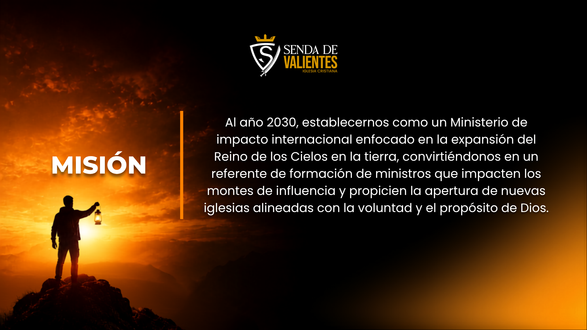
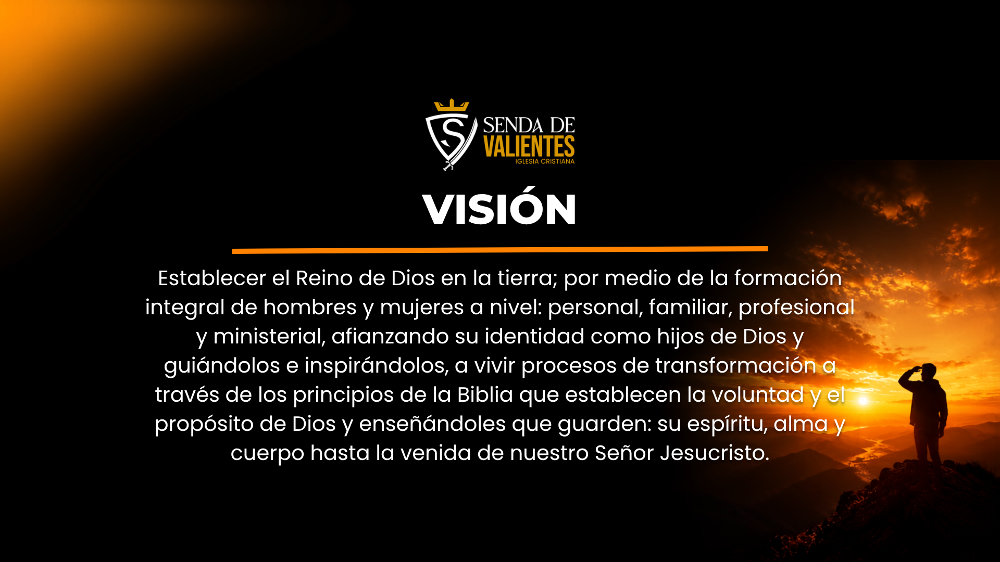

Sobre Nosotros
"Conociendo a Dios, construyendo familia y caminando con propósito."
Nuestra Historia
Un Sueño Nacido en el Corazón de Dios
Senda de Valientes nació a partir del llamado que Dios hizo al Pastor Ever Arévalo en mayo de 2010. Tras un proceso de crecimiento y consolidación ministerial, en el año 2023 se estableció oficialmente como Ministerio Internacional Senda de Valientes, manteniendo su compromiso con la transformación de vidas a través de los principios de la Palabra de Dios.
Impactando Generaciones
Hoy, el ministerio expande su impacto nacional e internacional bajo tres pilares fundamentales: Liderazgo, Transformación y Reino. A través de redes de transformación, el restablecimiento del modelo original de familia y la fundación Líderes de Impacto, Senda de Valientes trabaja activamente en formar líderes que dejen un legado duradero en las futuras generaciones.


Nuestro Pastor

Fundador de Senda de Valientes y el Centro de Liderazgo Integral Cristiano (CLIC), el Pastor Ever Arévalo cuenta con más de 15 años de experiencia sirviendo al ministerio. Es Administrador de Empresas con maestría en Psicología, escritor de más de 15 libros y director de la Fundación Líderes de Impacto. Su llamado está enfocado en la transformación personal, el desarrollo humano y el fortalecimiento familiar, capacitando a líderes que inspiren y dejen un legado duradero en las futuras generaciones.